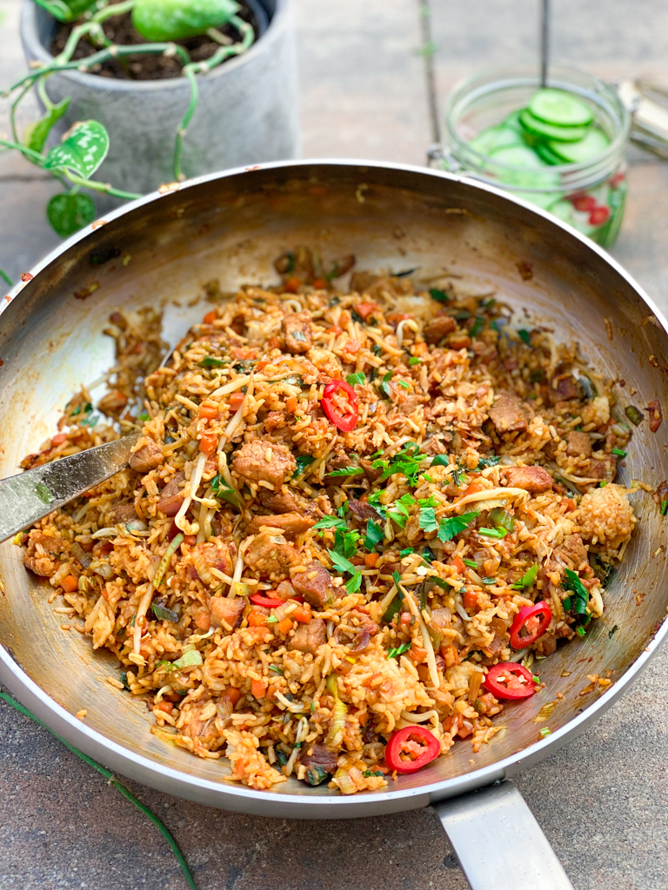

Recipe for Nasi Goreng
Go to homepage

Indonesian Nasi Goreng Recipe: A Delicious Fried Rice Dish with Vegetables, Meat, and Spices
Nasi Goreng is a popular Indonesian dish that consists of fried rice cooked with a variety of ingredients such as vegetables, meat and shrimp paste. It is a versatile dish that can be enjoyed as a main course or as a side dish. This recipe serves 4.
Ingredients
- 4 cups of cooked white rice
- 2 tbsp vegetable oil
- 1 onion, finely diced
- 2 cloves of garlic, minced
- 1/2 cup of diced vegetables (carrots, bell peppers, etc.)
- 1/2 cup of diced meat (chicken, beef or shrimp)
- 2 tbsp kecap manis (Indonesian sweet soy sauce)
- 1 tsp shrimp paste (optional)
- 2 eggs, fried or scrambled
- 1/4 cup of diced scallions
- This special sambal
Steps
- Heat the oil in a large pan over medium heat. Add the diced onion and garlic, cook until softened.
- Add the diced vegetables and meat and cook until they are lightly browned.
- Add the rice, stirring until well combined.
- Stir in the kecap manis, sambal, and shrimp paste (if using) and cook for an additional 2-3 minutes.
- Serve the nasi goreng in bowls, topped with the fried or scrambled eggs and scallions.
You can adjust the level of spiciness to your liking by reducing or increasing the amount of sambal. It's usually served with some sliced cucumber and fried shallot as garnish.